This assignment must be done using the BYOB (Build Your Own Blocks) version of Scratch. When you make blocks, be sure that the ATOMIC box is not checked!
Our goal is to draw a tree like this:
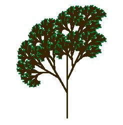
but we'll start with a simpler version that shows the technique clearly, although less prettily:
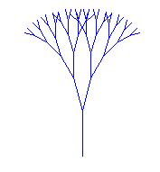
The key to understanding this technique is to see that the tree is a fractal, that is, a picture that contains smaller versions of itself:
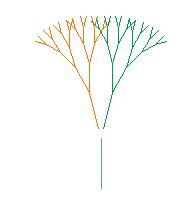
We're going to create a TREE block in Scratch. It'll start with a MOVE block to draw the trunk of the tree, then a TURN block turning left, then a TREE block to draw the left smaller tree, and so on.
"Wait!" you're probably thinking. "How can we use a TREE block inside a TREE block? It doesn't exist yet!" That's the big idea for this assignment.
We're going to work up to the complicated tree starting with very simple steps.
1. Make a TREE1 block (so named because it draws just one level of the tree) using this script:
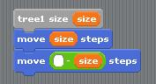
This looks ridiculously simple, but trust us, it'll get interesting soon. When run, the script draws one tree branch, and then moves the sprite back to its original position. That's going to be really important when we start using scripts within scripts; we always want to be able to assume that our tree blocks leave the sprite in the same position, and facing the same direction, after it as before it.
2. Point the sprite facing upward, and put the pen down. Then try TREE1 SIZE 50. You should get a result something like this:
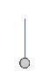
3. Make a TREE2 block that draws two levels:
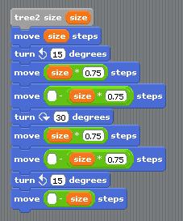
When run, it should give this result:
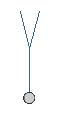
4. That TREE2 block is pretty long and repetitive. But we can simplify it if we notice that in two places it has a move forward/move back pair of blocks, and that this is what TREE1 does! So we can use TREE1 to shorten TREE2:
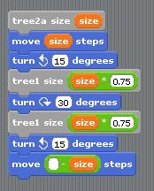
Note that the grey blocks inside this TREE2A script are TREE1 blocks, not TREE2 blocks! So there's no mysterious TREE-using-TREE situation here; it's not unusual for one block to be used in another block's script.
5. Make a TREE3 block that uses the TREE2 block, on the same pattern, and see if you get the result that you expect.
6. If you can stand it, make a TREE4 block that uses the TREE3 block and try it out.
This would be a good time to save your project.
7. Okay, here's the big idea: We can write a TREE block that uses itself in its own script provided that it knows how many levels it's expected to draw! So, in addition to the size input, it'll have a LEVELS input:
In the earlier steps, TREE3 used TREE2; TREE2 used TREE1. Here, TREE will use TREE, but reducing the number of levels by 1. See if you can do this without reading the hint.
8. Once you can draw a tree of five or six levels using your TREE block, see if you can make one like the first picture in this handout. It's different from what we've done so far because the smaller trees are drawn part way up the trunk, instead of at the top of the trunk, and because the pen color is green for the lowest-level branches (the TREE1-like ones) and brown for the others. You don't have to get it exactly like the picture; just try to make a more realistic-looking tree.
9. Here's another fractal picture. One level:
Two levels:
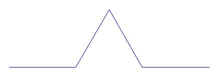
Three levels:
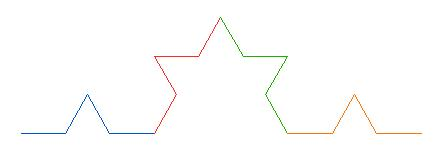
Four levels:
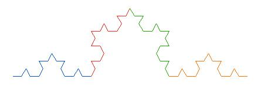
Once you have this working, you can put three of them together in a triangular arrangement to make a Koch snowflake:
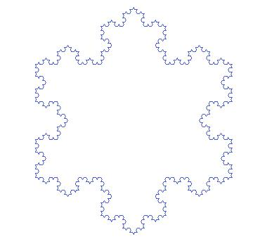